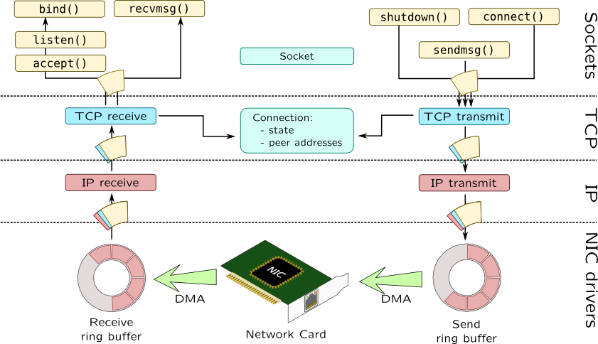
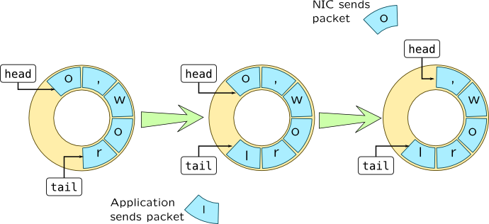
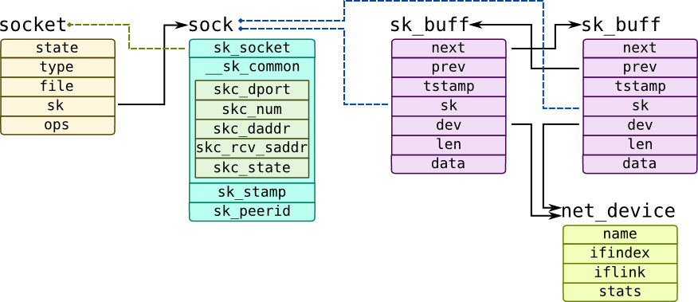
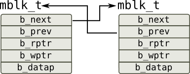
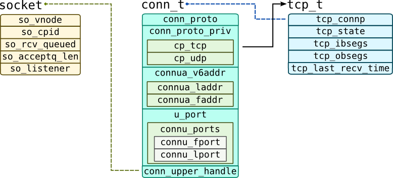

Network stack
One of the largest kernel subsystem is a network stack. It is called a stack because it consists from multiple protocols where each of them works on top of the more primitive protocol. That hierarchy is defined by different models such as OSI model or TCP/IP stack. When user data is passed through network, it is encapsulated into packets of that protocols: when data is passed to a protocol driver it puts some service data to the packet header and tail so operating system on receiver host can recognize them and build original message even when some data was lost or order of packets had changed during transmission.
Each layer of network stack has its responsibilities so they are not of concern of higher-layer protocols. For example, IP allows to send datagrams through multiple routers and networks, can reassemble packets but doesn't guarantee reliability when some data is lost –- it is implemented in TCP protocol. Both of them can only transmit raw data, encoding or compression is implemented on higher layer like HTTP.
Network subsystem (which transmits data between hosts) has a major difference over block input-output (which stores data): It is very sensitive to latency, so writing or reading data cannot be deferred. Due to that, sending and receiving is usually performed in the same thread context.
Network stack in Unix systems can be split into three generic layers:
- Socket layer which implements BSD sockets through series of system calls.
- Intermediate protocol drivers such as ip, udp and tcp and packet filters.
- Media Access Control (MAC) layer on the bottom which providing access to network interface cards (NICs) and NIC API itself. It is called GLD in Solaris.

Network input-output can require transferring huge amounts of data, so it may be ineffective to explicitly send write commands for each packet. Instead of handling each packet individually, NIC and its driver maintain shared ring buffer where driver puts data while card uses DMA (direct memory access) mechanisms to read data and send it over network. Ring buffers are defined by two pointers: head and tail:

When driver wants to queue packet for transmission it puts it into memory area of designated ring buffer and updates tail pointer appropriately. When NIC transfers data over a network it will update head pointer.
Data structures are usually shared between stack layers. In Linux packets are represented by a generic sk_buff structure:

That structure keeps two pointers: head and data and includes offsets for protocol headers. Data length is kept in len field, time stamp of packet in tstamp field. sk_buff structures form a doubly-linked list through next and prev structures. They refer network device descriptor which is represented by net_device structure and a socket which is represented by pair of structures: socket which holds generic socket data including file pointer which points to VFS node (sockets in Linux and Solaris are managed by special filesystems) and sock which keeps more network-related data including local address which is kept in skc_rcv_saddr and skc_num and peer address in skc_daddr and skc_dport correspondingly.
Note that CPU byte order may differ from network byte order, so you should use conversion functions to work with addresses such as ntohs, ntohl or ntohll to convert to host byte order and htons, htonl and htonll for reverse conversions. They are provided both by SystemTap and DTrace and have same behaviour as their C ancestors.
Here are sample script for tracing message receiving in Linux 3.9:
# stap -e '
probe kernel.function("tcp_v4_rcv") {
printf("[%4s] %11s:%-5d -> %11s:%-5d len: %d\n",
kernel_string($skb->dev->name),
ip_ntop($skb->sk->__sk_common->skc_daddr),
ntohs($skb->sk->__sk_common->skc_dport),
ip_ntop($skb->sk->__sk_common->skc_rcv_saddr),
$skb->sk->__sk_common->skc_num,
$skb->len);
}'
Earlier versions of Linux (2.6.32 in this example) use different structure called inet_sock:
# stap -e '
probe kernel.function("tcp_v4_do_rcv") {
printf("%11s:%-5d -> %11s:%-5d len: %d\n",
ip_ntop(@cast($sk, "inet_sock")->daddr),
ntohs(@cast($sk, "inet_sock")->dport),
ip_ntop(@cast($sk, "inet_sock")->saddr),
ntohs(@cast($sk, "inet_sock")->sport),
$skb->len);
}'
Solaris has derived STREAMS subsystem from System V which is intended to provide API for passing messages between multiple architectural layers which is perfectly fits to how network stack look like. Each message is represented by an mblk_t structure:

Consumer reads data referred by b_rptr pointer while producer puts it under b_wptr pointer if there is enough space in allocated buffer (it is referred by b_datap) or allocates a new message and sets up forward and backward pointers b_next and b_prev so these messages form a doubly-linked list.
Note that unlike sk_buff from Linux, these messages do not contain pointers to the management structure. Instead of doing that, functions pass pointer to them as a separate argument which is usually first argument of the function (arg0 in DTrace): mac_impl_t for MAC layer, ill_t for IP layer and conn_t for TCP/UDP protocols:

Solaris wraps sockets into sonode structure which are handled by virtual file system called sockfs. so_vnode field in that structure points to VFS node. Like we mentioned before, TCP and UDP connection are managed by conn_t structure. It keeps addresses in connua_laddr and connu_lport fields for local address and uses connua_faddr and connu_lport for remote ports. Note that these names are different in Solaris 10.
Here are example DTrace script for tracing message receiving in Solaris 11:
# dtrace -n '
tcp_input_data:entry {
this->conn = (conn_t*) arg0;
this->mp = (mblk_t*) arg1;
printf("%11s:%-5d -> %11s:%-5d len: %d\n",
inet_ntoa((ipaddr_t*) &(this->conn->connua_v6addr.
connua_faddr._S6_un._S6_u32[3])),
ntohs(this->conn->u_port.connu_ports.connu_fport),
inet_ntoa((ipaddr_t*) &(this->conn->connua_v6addr.
connua_laddr._S6_un._S6_u32[3])),
ntohs(this->conn->u_port.connu_ports.connu_lport),
(this->mp->b_wptr - this->mp->b_rptr));
}'
Solaris 11 introduced new providers for tracing network: tcp, udp and ip. Here are probes that are provided by them and their siblings from Linux and SystemTap:
| Action | DTrace | SystemTap |
| TCP | ||
| Connection to remote node |
tcp:::connect-request tcp:::connect-established tcp:::connect-refused |
kernel.function("tcp_v4_connect") |
| Accepting remote connection |
tcp:::accept-established tcp:::accept-refused |
kernel.function("tcp_v4_hnd_req") |
| Disconnecting |
fbt:::tcp_disconnect |
tcp.disconnect |
| State change |
tcp::state-change |
- |
| Transmission |
tcp:::send |
tcp.sendmsg |
| Receiving |
tcp:::receive |
tcp.receive tcp.recvmsg |
| IP | ||
| Transmission |
ip:::send |
kernel.function("ip_output") |
| Receiving |
ip:::receive |
kernel.function("ip_rcv") |
| Network device | ||
| Transmission |
mac_tx:entry, or function from NIC driver like e1000g_send:entry |
netdev.transmit netdev.hard_transmit |
| Receiving |
mac_rx_common:entry, or function from NIC driver like e1000g_receive:entry |
netdev.rx |
Sockets can be traced using syscall tracing. SystemTap provides special tapset socket for that.
Both Linux and Solaris provide various network statistics which are provided by SNMP and accessible through netstat -s command. Many events registered by these counters are implemented using mib provider from DTrace or tcpmib, ipmib and linuxmib tapsets in SystemTap, but they do not have connection-specific data.